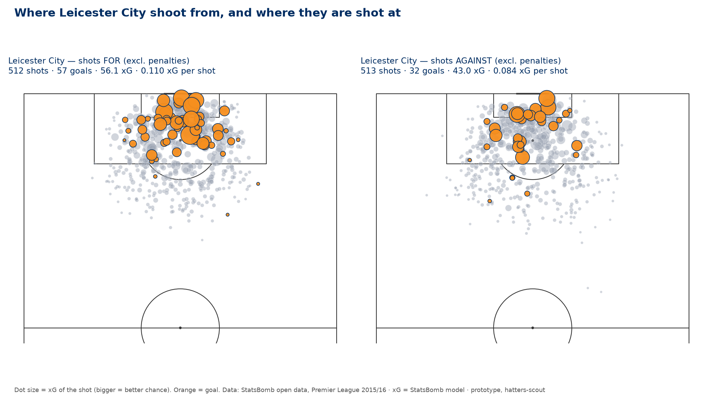

Sunday review: Luton 0–1 Bradford City, Saturday, Kenilworth Road. Bobby Pointon headed Bradford in front in the fourth minute and Luton never got it back. They had much the better of the first half and barely existed in the second. Luton are 16th on eight points from seven; Bradford are top. The selection news is that Jack Wilshere dropped Josh Keeley (GK) for James Shea (GK) — the standing goalkeeping question, answered by the manager rather than by this page — and that Jordan Clark (CM) came off the bench in a protective mask, four weeks after breaking his jaw.
The charts on this page do not contain Saturday's match. The results file is refreshed by a nightly job; the copy available to this run ends on 17 September, and the single permitted attempt to fetch a newer one failed. So every chart, tile and file-derived table below still shows Luton on six games, without the Bradford result. Numbers taken from the file are labelled "through 17 Sep"; numbers from Saturday come from match reports and are labelled as such. No match-level expected-goals figure for Saturday exists in any source this page is allowed to use, so the review below reasons from shot distribution and territory rather than from an xG total it does not have. The next run picks the match up.
There is no league game to preview. The only fixture inside seven days is an EFL Trophy group tie against an under-21 side on Tuesday, which this page notes and does not preview. With Huddersfield (26 Sep) and Doncaster (3 Oct) postponed, Luton's next league match is Wycombe Wanderers away, Saturday 10 October — twenty-one days after Saturday. The matchup charts therefore point at Wycombe three weeks early, and Thursday's preview run will find nothing in range and stop.
Where things stand league position · last result · availability
- Position
- 16th in League One — 8 points from 7 games (2W 2D 3L), 12 scored, 14 conceded, goal difference −2. Four places lower than before Saturday. The table is still tight: 11th to 19th is separated by one point, and Oxford and Reading have a game in hand on everyone.
- Last out
- Luton 0–1 Bradford City, Saturday 19 Sep, Kenilworth Road, 15:00. Attendance 11,647, including 1,309 from Bradford. Referee Ross Martin. Bradford went top; Luton have now lost two in a row.
- The season's number
- Through 17 September the file has Luton conceding 6.4 goals more than their expected goals against over six games — second-largest gap in the division behind Bromley's 6.7, and by far the most extreme relative to how few chances Luton allow. Saturday's goal is not yet in that figure. Notably, Wilshere used the same measure himself to explain dropping his goalkeeper: he said the expected-goals-against column shows the defending is sound and the goals are excess. That is this page's argument, made by the manager, and acted on.
- Available again
- Jordan Clark (CM) — back in the squad on Saturday for the first time since breaking his jaw on 22 Aug, wearing a protective mask, and introduced from the bench. He had Luton's last chance of the match, an ambitious effort in stoppage time that went wide. Not yet a starter, but the four-week absence is over.
- Unavailable
- Shayden Morris (RW) — hamstring, reported by Luton Today on 21 Aug as a long rehab with no timescale; he has not featured since and no update has been published. Harrison Ashby (RB) — sent off in the fifth minute of stoppage time for kicking out. The club has not published the charge or the length. Mechanistically: if it is recorded as violent conduct the standard penalty is three matches across the club's next first-team fixtures, which with the league programme stopped would mean both EFL Trophy ties and the Wycombe game. That is inference from the usual rule, not a confirmed suspension.
- Goalkeeper
- James Shea (GK) made his first league start since New Year's Day, in place of Josh Keeley (GK), who was named among the substitutes. Wilshere framed it as competition rather than punishment — he said he wants two goalkeepers competing at this level and that a spell out may help Keeley — and did not present it as permanent. Keeley had conceded 13 in six.
- Touchline
- No FA charge or ban arising from Jack Wilshere's dismissal at Stevenage on 10 Sep has been reported, ten days on, and nothing in Saturday's coverage suggested he was absent from the technical area: he made five changes, spoke about being "sucked in" during the second half, and gave the post-match media duty himself. Treat the matter as closed unless something surfaces.
- Schedule
- Two league fixtures postponed. Huddersfield away (26 Sep) and Doncaster at home (3 Oct) are off, announced by the club on 7 Sep for international call-ups; Luton have not named the players. No rearranged dates published. Next league match: Wycombe away, Sat 10 Oct.
- EFL Trophy
- Ipswich Town U21 at home, Tuesday 22 Sep, 19:00, then Colchester United away, Tuesday 6 Oct, 19:45 — group ties, one against an under-21 side, noted here and not previewed.
Four numbers pointed at the next league game, and they invert last week's set. Luton's two weaknesses are unchanged; Wycombe are not Bradford — where Bradford suppressed chances better than anyone, Wycombe concede 1.57 expected goals a game and allow 15.2 shots. Team-level data from football-data.co.uk through 17 Sep 2026, which contains neither Saturday's Luton–Bradford match nor Wycombe's seventh game; ranks are out of 24 clubs.
Last match Luton 0–1 Bradford City · Sat 19 Sep · Kenilworth Road · 11,647
The manager changed his goalkeeper, and conceded in four minutes to a header nobody marked
Wilshere made five changes — his heaviest rotation yet, against a run of three a game — and the one that mattered was in goal. James Shea (GK), 35 years old and without a league start since New Year's Day, came in for Josh Keeley (GK), who dropped to the bench. Harrison Ashby (RB), Emilio Lawrence (RW), Kasey Palmer (AM) and Jake Richards (LW) also returned; George Johnston (CB) kept his place alongside Mads Andersen (CB) and Hakeem Odoffin (CB), with Liam Walsh (CM) captaining and Dan Gore (CM) beside him, and Callum Marshall (CF) alone up front.
Four minutes in, it was already 0–1. Per Luton Today's account the move began with a poor clearance from Shea, ran through a cross from Hayden Matthews, and finished with Bobby Pointon unmarked at the back post to head in. Graham Alexander called the header unbelievable; it was also, on that description, a free one.
This is the most informative ninety minutes the season's central question has produced, and it points away from the goalkeeper. The change was made to fix an excess of goals over expected goals. What the change produced was a goal in which the failures were a clearance and a marking assignment — neither of them shot-stopping, which is the only thing swapping goalkeepers can reliably address. One match does not settle it. But the type of goal matters more than the fact of it: for six games the argument has been "is it Keeley, the back line, or set pieces?", and on the first day Luton removed Keeley from the equation, a Bradford forward was standing on his own six yards out.
A first half worth watching, a second half that disappeared
There is no expected-goals figure for this match on this page, and there will not be one until the results file updates. Saying so matters more than filling the gap: the whole method here is that the model says something the scoreline does not, and without the number the honest move is to work from the shot distribution instead of inventing a total. Wilshere put Luton's first half at around ten or eleven shots. He put their entire second half at one shot on target.
That split is the match. The chances existed and they were real ones: Richards laid a first-time ball into Palmer, who put it wide; Palmer shot straight at Jon McCracken (GK); Marshall was denied by a last-ditch Aden Baldwin (CB) block. On the season Luton take good chances by the division's standards — 0.119 expected goals per shot, fourth of 24 — and at Kenilworth Road they average 1.85 expected goals a game. Saturday was the first home match they have failed to score in.
Note what this was not. At Stevenage nine days earlier the complaint was possession without shots: eighty per cent of the ball, ten shots all match, 0.83 expected goals, the worst rate of chance quality Luton had managed. That did not repeat. Luton generated roughly as many shots in forty-five minutes on Saturday as they had in ninety at Stevenage. Two consecutive defeats, two different failures — which is a more awkward finding than one repeated flaw, because it means there is no single thing to fix.
The one pattern that did hold: Luton do not start games
Six games into the season this page recorded that nine of the thirteen goals Luton had conceded came before half-time, that they had scored nine of twelve after it, and that they had never once led at the interval. Saturday half-confirmed and half-broke it. The early concession held — a fourth-minute goal is the most extreme version of it yet, and Wilshere's own verdict was that you cannot concede like that in the third minute against a side built to defend a lead. But the second-half revival, the reliable half of the pattern, did not arrive at all.
So the durable fact, seven matches deep, is narrower than "the first half is where the season is lost". It is that Luton have not led at half-time in a single league game this season, and that the goals they concede arrive disproportionately early. Everything else about the shape of their matches has varied. That one has not.
It is also the specific vulnerability Bradford were built to exploit, and Alexander effectively said so: he admitted Bradford struggled in the first half and could not stop the flow of Luton's play. A side being out-played while a goal up, by a team that has never led at the break, is not in much danger. The lead did the work the performance could not.
What the beat saw that the numbers cannot
Luton Today's reading of the second half is the part no dataset holds: Bradford "squeezed the life out of them", and Luton grew frustrated and began forcing passes that were intercepted. Alexander's account matches from the other side — he thought Bradford's out-of-possession positioning and pressing intensity improved markedly after the break, while conceding his side were sloppy in possession at times. Both managers, independently, describe a second half decided by Bradford's game management rather than by chances.
The frustration has a timestamp. Harrison Ashby (RB) was sent off in the fifth minute of stoppage time for kicking out — a full-back playing against his former club, at the end of a game his side had dominated and lost. That is exactly the kind of detail a team-level file can never contain and a match report always does, and it is worth a line here because it is evidence about the afternoon's temperature, not about its tactics.
Jordan Clark (CM) came on wearing a protective mask, twenty-eight days after surgery on a broken jaw, and had the last meaningful moment of the match — an ambitious attempt in stoppage time that went wide. This page has been tracking whether the attack's shape changes with him in it, not just its finishing. A cameo in a losing team chasing a goal tells you nothing about that, and pretending otherwise would be the easiest mistake available this week. What it does tell you is that he is fit enough to be picked, which is the precondition for finding out.
Next up no league game for three weeks · Wycombe Wanderers (a) · Sat 10 Oct · 15:00 UK
Wycombe Wanderers, twenty-one days out
Tuesday's EFL Trophy tie against Ipswich Town's under-21s is noted above and not previewed. The next league match is at Adams Park on Saturday 10 October, 15:00, and because Thursday's preview run will find nothing inside its seven-day window and stop, this short note is the only advance look the page gives Wycombe until October. Treat it as provisional: three weeks is a long time in a squad that rotates this much.
Wycombe sit 14th on nine points from seven, having won 1–0 on Saturday for what the goal columns suggest was their first clean sheet of the season. Through 17 September the file has them creating 1.24 expected goals a game (15th) and allowing 1.57 (17th), taking 11.5 shots and conceding 15.2. They are, in short, the opposite of Bradford in every respect that mattered last week: a side that gets out-shot most weeks and stays in games anyway.
How they stay in them is the interesting part, and it is uncomfortably familiar. Wycombe have conceded 4.6 goals more than their expected goals against — third-worst in the division, behind only Bromley and Luton. They also score 2.5 more than expected, eighth-best, off an unusually high rate of shots on target: 5.7 a game, fourth in the league, from the sixteenth-highest shot count. Almost everything about Wycombe's season so far is finishing and conceding running ahead of process, at both ends. Two of the division's three biggest over-conceders meeting is, if nothing else, an unusually pure test of whether this sort of gap means anything.
The two things that will decide it
- The first twenty minutes, again. This is the sharpest single fact available about the fixture: Wycombe have scored seven of their ten goals before half-time, and Luton have conceded nine of their thirteen before half-time. The division's most front-loaded attack meets the division's most front-loaded concession, at the venue where Luton's record is worse. If Luton reach the interval level, they will have removed the single clearest route Wycombe have to winning the game — and they have not managed to lead at half-time in any match this season.
- Who is in goal, and whether it matters. Three weeks of training separate now from Adams Park, and Wilshere has said he wants two goalkeepers competing rather than one settled choice. The question this page has been asking all season gets a second data point on 10 October: if James Shea (GK) keeps the shirt and Luton still concede more than the chances are worth, the goalkeeper hypothesis is in real trouble. If the marking improves and the gap closes, the honest conclusion will be that the change worked on the back line, not between the posts.
Wycombe's figures here are from six games, through 17 September; their seventh match is not in the file. Luton's are from six too, without Saturday. A fuller preview — likely lineups, injuries, press-conference news and a proper watch list — belongs to the run of Thursday 8 October, which is the first scheduled fire with this fixture inside its window.
The matchup in numbers Luton's tendencies against Wycombe's · team-level data through 17 Sep 2026
Luton are better than Wycombe at both ends, and one point behind them
Each dot is a League One club, placed by how many chances it creates and how many it allows, per game. Luton create more than Wycombe (1.55 against 1.24, seventh against fifteenth) and allow considerably less (1.10 against 1.57, seventh against seventeenth). On the chart they are in different halves in both directions. In the league table Wycombe are 14th on nine points and Luton are 16th on eight.
That is the whole page in one sentence, and it is worth resisting the comfortable version of it. The comfortable version says Luton are unlucky and Wycombe are lucky and both will regress. The uncomfortable version is that Wycombe get out-shot by four attempts a game and keep drawing anyway — three draws in six — and that a side which converts at the rate they do while conceding at the rate they do is either doing something the model cannot see, or is exactly as fragile as it looks. This fixture is the cleanest natural experiment the season has offered so far, and it happens on 10 October.
Table view
| Team | P | xG for /g | xG against /g | xG diff /g |
|---|---|---|---|---|
| Reading | 5 | 2.05 | 0.91 | +1.14 |
| Huddersfield | 6 | 1.88 | 1.02 | +0.86 |
| Sheffield Wednesday | 6 | 2.11 | 1.38 | +0.73 |
| Stockport | 6 | 1.88 | 1.22 | +0.66 |
| Luton Town | 6 | 1.55 | 1.10 | +0.45 |
| Wigan | 6 | 1.94 | 1.52 | +0.42 |
| Notts County | 6 | 1.32 | 0.97 | +0.35 |
| Doncaster | 6 | 1.40 | 1.05 | +0.35 |
| Bradford City | 6 | 1.12 | 0.84 | +0.28 |
| Peterborough | 6 | 1.46 | 1.36 | +0.10 |
| Barnsley | 6 | 1.37 | 1.32 | +0.05 |
| MK Dons | 7 | 1.47 | 1.58 | -0.11 |
| Stevenage | 6 | 0.94 | 1.07 | -0.12 |
| Oxford | 5 | 1.40 | 1.57 | -0.18 |
| Leicester | 6 | 1.21 | 1.51 | -0.30 |
| Wycombe | 6 | 1.24 | 1.57 | -0.32 |
| Plymouth | 6 | 1.28 | 1.60 | -0.32 |
| Burton | 6 | 0.91 | 1.25 | -0.34 |
| Blackpool | 6 | 1.72 | 2.13 | -0.41 |
| Mansfield | 6 | 1.10 | 1.52 | -0.42 |
| AFC Wimbledon | 7 | 0.87 | 1.33 | -0.46 |
| Leyton Orient | 6 | 1.07 | 1.67 | -0.60 |
| Cambridge | 6 | 1.00 | 1.72 | -0.73 |
| Bromley | 6 | 0.92 | 1.72 | -0.80 |
Luton · six games
Table view
| Match | Expected against | Conceded | Gap |
|---|---|---|---|
| @ Reading · 15 Aug | 1.77 | 3 | +1.23 |
| v Notts County · 22 Aug | 0.79 | 2 | +1.21 |
| @ Mansfield · 30 Aug | 1.37 | 5 | +3.63 |
| v Stockport · 2 Sep | 0.85 | 0 | -0.85 |
| v Leyton Orient · 5 Sep | 0.56 | 1 | +0.44 |
| @ Stevenage · 10 Sep | 1.28 | 2 | +0.72 |
Wycombe · six games
Table view
| Match | Expected against | Conceded | Gap |
|---|---|---|---|
| @ Blackpool · 15 Aug | 1.97 | 1 | -0.97 |
| v Plymouth · 22 Aug | 0.77 | 1 | +0.23 |
| @ Stockport · 29 Aug | 1.33 | 5 | +3.67 |
| v Sheffield Wednesday · 1 Sep | 2.55 | 2 | -0.55 |
| v MK Dons · 5 Sep | 1.65 | 3 | +1.35 |
| @ Leyton Orient · 12 Sep | 1.12 | 2 | +0.88 |
Two clocks running in opposite directions
Nine of the thirteen goals in Luton's column here were conceded before half-time, and they have never led at the break — level three times, behind three times, and behind again from the fourth minute on Saturday. After the interval the picture inverts: nine of their twelve goals scored, four conceded. Team-level data cannot say whether that is a slow start, an early press that fades, or opponents front-loading their plan. It can say the pattern is now seven matches deep and is the single most Luton-specific fact in the dataset.
Now put Wycombe's clock beside it. Wycombe have scored seven of their ten goals before half-time and conceded eight of their fourteen after it. Point for point, that is Luton's season run backwards. The two sides' worst forty-five minutes and best forty-five minutes land on top of each other in exactly the wrong order for Luton, and the fixture is away, where Luton's problems have lived. If there is one thing to carry from this section into October, it is that the first half at Adams Park is not a neutral period to get through.
The dumbbells show the other thing worth knowing: Luton's conceding gap is not evenly spread. Reading, Mansfield and Stevenage — all away — produced it. At home, before Saturday, Luton had conceded three from 2.2 expected. Wycombe's dumbbells are long too, but for a different reason: they have conceded in every one of these six matches, fourteen goals in all, and the 1–5 at Stockport and the 1–2 against Sheffield Wednesday are the sort of afternoons Luton have not had at either end.
The set-piece story that framed last week does not carry over
Last week this block argued that Bradford's best route to a goal was a corner, because they won seven a game and created almost nothing in open play. Wycombe do not present that problem. They win 5.7 corners a game, seventh, and concede 5.5, and Luton concede four a game, fourth fewest — so the dead-ball collision that mattered against Bradford is roughly a wash here. The Wycombe threat is volume, not set pieces: they get 5.7 shots on target a game, fourth in the division, off the sixteenth-highest shot count. They hit the target at an unusual rate and they score more than the model says those shots are worth, by 2.5 goals over six games.
For the record, last week's open question resolved against the set-piece theory. The page asked whether Bradford's goals actually came from their corners; the goal they scored at Kenilworth Road on Saturday came from open play — a cross from the left headed in unmarked at the back post, four minutes in. Two Bradford goals now traced, neither from a corner. That closes a small thread and leaves a general lesson worth keeping: a high corner count measures territory, not scoring, and this page should treat it as a pressure gauge rather than a threat forecast. Against Wycombe the equivalent gauge is the shot count — if Luton are not taking fourteen or fifteen attempts at Adams Park, something has gone wrong, because almost everyone else does.
The variance problem, seen across the league
Every club's goals conceded minus the chances they allowed. Luton remain second on this chart at +6.4, behind Bromley's +6.7 — and the club sitting third is Wycombe, at +4.6. Three clubs have run meaningfully ahead of their expected goals against this season and Luton are about to play one of the other two. The distinction that matters is how they got there: Bromley have allowed 48 shots on target, Wycombe 33, Luton 23. Bromley are being beaten up. Wycombe are being out-shot and hanging on. Luton are being beaten by very little, which is why theirs is the gap that demands an explanation rather than a shrug.
Which is why the rate, not the total, is the number to carry: 57% of the on-target shots Luton have faced have gone in, against a league average of 36%. That is 24th of 24, and the next-worst club, Barnsley at 50%, is seven points behind. Rates like that do not persist. Either the goalkeeping was the cause, in which case Saturday's change fixes it, or it is a run, in which case it fixes itself — and Luton have now done the experiment, which is more than most clubs in this position manage in September. Wycombe, for comparison, are at 42%, twentieth: bad, but the ordinary kind of bad.
The honest framing, three weeks out: Luton's process is the fifth-best in League One and their results are sixteenth. Wycombe's process is sixteenth and their results are fourteenth. Every free number available says Luton should win at Adams Park, and every free number available said something similar before Saturday. The page's own position is that the process numbers are the better guide over a season and a poor guide over one afternoon, and that six matches is much closer to one afternoon than to a season.
Table view
| Team | Conceded | Expected | Gap |
|---|---|---|---|
| Blackpool | 9 | 12.8 | -3.8 |
| AFC Wimbledon | 7 | 9.3 | -2.3 |
| Sheffield Wednesday | 6 | 8.3 | -2.3 |
| Huddersfield | 4 | 6.1 | -2.1 |
| Oxford | 6 | 7.9 | -1.9 |
| Plymouth | 8 | 9.6 | -1.6 |
| Cambridge | 9 | 10.3 | -1.3 |
| MK Dons | 10 | 11.1 | -1.1 |
| Bradford City | 4 | 5.0 | -1.0 |
| Leyton Orient | 9 | 10.0 | -1.0 |
| Stevenage | 7 | 6.4 | +0.6 |
| Leicester | 10 | 9.1 | +0.9 |
| Notts County | 7 | 5.8 | +1.2 |
| Peterborough | 10 | 8.2 | +1.8 |
| Mansfield | 11 | 9.1 | +1.9 |
| Wigan | 11 | 9.1 | +1.9 |
| Reading | 7 | 4.6 | +2.4 |
| Burton | 10 | 7.5 | +2.5 |
| Stockport | 10 | 7.3 | +2.7 |
| Doncaster | 9 | 6.3 | +2.7 |
| Barnsley | 11 | 7.9 | +3.1 |
| Wycombe | 14 | 9.4 | +4.6 |
| Luton Town | 13 | 6.6 | +6.4 |
| Bromley | 17 | 10.3 | +6.7 |
Squad tracker 6 league games, to 17 Sep · Saturday not included · team level
| Measure | Luton | Rank / 24 | Note |
|---|---|---|---|
| xG for, per game | 1.55 | 7th | upper-mid |
| xG against, per game | 1.10 | 7th | solid |
| xG difference, per game | +0.45 | 5th | promotion-shaped |
| Goals − xG, for (season total) | +2.69 | 7th | finishing well |
| Goals − xG, against (season total) | +6.38 | 23rd | 2nd worst (Bromley +6.65) |
| Share of shots on target conceded that scored | 57% | 24th | worst in league |
| Shots / on target | 13.0 / 4.5 | 12th / 7th | — |
| xG per shot | 0.119 | 4th | good chances |
Home / away split three games each
| Venue | xG for | xG against | Scored | Conceded | GA − xGA |
|---|---|---|---|---|---|
| Home | 1.85 | 0.73 | 5 | 3 | +0.80 |
| Away | 1.26 | 1.47 | 7 | 10 | +5.58 |
The away problem is not that Luton defend much worse away — the chances they concede are only moderately worse. It is that those chances go in. Ten goals from 4.4 expected in three away matches is either a goalkeeping story or the worst run of luck in the division, and six games cannot tell you which. Saturday added a fourth home game that is not in this table: a goal conceded at Kenilworth Road from a chance the file has not yet priced, and Luton's first home blank of the season. When it lands, the home row gets slightly worse at both ends and the away row does not move.
Team-level only: no player attribution, no possession, no pressing data. Player-level reading here is by eye from FotMob and Sofascore and from beat reporting, and is flagged as such. The xG model is unattributed — football-data.co.uk's column notes document every other field, including the bookmaker odds, and say nothing about who supplies the expected-goals figures. Measured per game rather than in total, Luton's conceding gap is +1.06, still second-worst behind Bromley's +1.11 and ahead of Wycombe's +0.77. Every club in the file is level on six matches, so the per-game and total rankings agree for once — but the real table has moved past it: most clubs have now played seven, and Luton's seventh, the Bradford defeat, is the one missing here. Read this table as the state of play up to 17 September, not as of today.
Season state table · what's left of the schedule
| # | Club | P | Pts | GD | xGD /g |
|---|---|---|---|---|---|
| 1 | Bradford City | 7 | 15 | +3 | +0.28 |
| 2 | Sheffield Wednesday | 7 | 14 | +7 | +0.73 |
| 3 | Plymouth | 7 | 13 | +4 | -0.32 |
| 4 | Huddersfield | 7 | 12 | +5 | +0.86 |
| 5 | Cambridge | 7 | 12 | +2 | -0.73 |
| 6 | Oxford | 6 | 11 | +6 | -0.18 |
| 7 | AFC Wimbledon | 7 | 11 | −2 | -0.46 |
| 8 | Reading | 6 | 10 | +7 | +1.14 |
| 9 | Stockport | 7 | 10 | +6 | +0.66 |
| 10 | Leyton Orient | 7 | 10 | +4 | -0.60 |
| 11 | Stevenage | 7 | 9 | +3 | -0.12 |
| 12 | Burton | 7 | 9 | 0 | -0.34 |
| 13 | Leicester | 7 | 9 | −2 | -0.30 |
| 14 | Wycombe | 7 | 9 | −3 | -0.32 |
| 15 | Blackpool | 7 | 8 | 0 | -0.41 |
| 16 | Luton Town | 7 | 8 | −2 | +0.45 |
| 17 | Mansfield | 7 | 8 | −3 | -0.42 |
| 18 | Barnsley | 7 | 8 | −5 | +0.05 |
| 19 | Bromley | 7 | 8 | −10 | -0.80 |
Top six plus everyone within a point of Luton, which this week is most of the division: 11th to 19th is separated by one point. Position, played, points and goal difference are current after Saturday. The xGD column is not: it is per-game expected-goal difference from the results file through 17 September, six matches for every club, and it therefore excludes the latest round. It is here to be read against the points column, not added to it.
Read that way it says something awkward. Luton's +0.45 a game is the fifth-best figure in the division and they are sixteenth. Cambridge sit fifth on points with one of the division's worst underlying numbers. Seven games is not enough for the table to mean much, and the clubs it is currently flattering are not the clubs the process numbers favour. That cuts both ways for Luton: it is a reason to expect improvement and a reason to distrust any confident reading of September, including this one.
| Date | Opponent | Venue | Comp | UK kickoff |
|---|---|---|---|---|
| Tue 22 Sep | Ipswich Town U21 | Home | EFL Trophy | 19:00 |
| Sat 26 Sep | Huddersfield | Away | League One | POSTPONED |
| Sat 3 Oct | Doncaster Rovers | Home | League One | POSTPONED |
| Tue 6 Oct | Colchester United | Away | EFL Trophy | 19:45 |
| Sat 10 Oct | Wycombe Wanderers | Away | League One | 15:00 |
Shape: the league season stops here for three weeks. Luton announced on 7 Sep that Huddersfield away and Doncaster at home are postponed for international call-ups; the club has not said which players, and no rearranged dates have been published. What remains between now and 10 October is two EFL Trophy group ties, one of them against an under-21 side. Between the Stevenage defeat on 10 September and the Wycombe game on 10 October — a calendar month — Luton will have played one league match, and it was Saturday's.
Two consequences worth holding on to. The first is that Saturday's defeat sits on the table until the middle of October and will be over-read for three weeks, by this page as much as anyone: a seven-game sample nobody can add to is the worst kind of evidence to argue from, and it is the only kind available. The second is that Jordan Clark (CM) gets three weeks of training rather than three matches of absence, and James Shea (GK) gets three weeks to be established or reconsidered. The Trophy ties are where both of those questions actually get worked on, even though neither tie tells you much on its own.
Kickoff times for non-televised Saturdays are the standard 15:00 and are subject to Sky moving them. The fixture beyond Wycombe — Saturday 17 October, matchday 11 — was not confirmed on the sources this page checked, so it is left off rather than guessed.
Player watch standing interests
Back. Named among the substitutes on Saturday for the first time since breaking his jaw against Notts County on 22 August, wearing the protective mask the club had been waiting on, and introduced during the second half. His was Luton's last chance of the match: an ambitious effort deep in stoppage time that went wide. Twenty-eight days from surgery to a competitive appearance is a fast return for that injury, and it is the single piece of unambiguously good news this page has to report.
What it does not do is answer the question this section has been holding open. The test was never whether Luton score more with him — it was whether the attack's shape changes: more penetration and arrivals in the box, less sideways circulation in front of a settled defence. Twenty-odd minutes chasing a goal against a side protecting a lead is the least informative context imaginable for that. Anyone reading Saturday's cameo as evidence either way is reading noise.
Where it actually gets tested. He has three weeks and two EFL Trophy ties before the next league match. A starting role on Tuesday against Ipswich's under-21s would be the obvious way to build minutes, and it would tell you about his fitness rather than about the team. The real evidence arrives at Adams Park on 10 October, if he starts — and the thing to watch is not his goal count but whether Luton's first-half shot volume comes with anyone arriving late in the box.
Dropped. The standing question this page has asked since the first edition — is it him, the back line, or set pieces? — was taken out of its hands on Saturday, when Wilshere left him out and started James Shea (GK), 35, for his first league start since New Year's Day. Keeley was on the bench. He had conceded thirteen goals in six matches, five of them at Mansfield.
Wilshere's reasoning is the part worth dwelling on, because it is this page's own argument coming back the other way. He pointed at the expected-goals-against column — Luton rank seventh of twenty-four on chances allowed per game — and said it shows the defending is doing a lot of things right, and that the goals are therefore excess. That is precisely the gap this section has been tracking. He framed the change as competition rather than punishment, said he wants two goalkeepers competing at this level, was warm about Keeley as a young goalkeeper, and suggested a spell out of the side might help him reflect. He did not present it as permanent.
And then the first goal of the new arrangement went in after four minutes. On Luton Today's description it began with a poor clearance from the incoming goalkeeper and ended with a Bradford forward unmarked at the back post. Neither of those is shot-stopping. That is one match and it proves nothing on its own — but it is the first piece of evidence generated by removing the variable, and it points at the back line rather than at whoever is behind it. The honest position is unchanged in substance and sharper in framing: the free data still cannot separate poor goalkeeping from well-struck shots, because there is no post-shot expected goals in it; what has changed is that Luton have now run the experiment, and the next three months of results are the read-out. The name, checked again against the club's own team sheet, is Josh.
Marshall (CF) started again, alone in attack, and was denied by a last-ditch block from Aden Baldwin (CB) in the first half — Luton's clearest opening in a period when they had ten or eleven attempts. Wells (CF), the club's top scorer, came off the bench for the second match running.
The pairing question stays open, and this week it stays open for a duller reason than usual: the reports name Wells, Izzy Jones (LB), Jamie Donley (AM) and Jordan Clark (CM) as substitutes without making clear whether Marshall stayed on the pitch alongside Wells. This page is not going to assert that they did or did not play together on an account that does not say. What can be said is that Marshall has now started three in a row and Wells has started none of them.
The pattern that is becoming hard to ignore is the order of the questions. Luton took roughly eleven shots in a first half and one on target in a second, against a defence that had conceded four goals all season. The striker choice is downstream of that. If the supply in the second half of matches keeps looking the way it did on Saturday, it will not matter much which of them is on the pitch to receive it.
Talking points for Megan
- Luton changed the goalkeeper and conceded in four minutes to an unmarked header. This is the best argument available that the conceding problem was never mainly a shot-stopping problem — and it is still only one goal. Wilshere made the change on exactly the evidence this page has been publishing: the expected-goals-against column says Luton defend well and the goals say otherwise. He bet that the difference was the goalkeeper. The first ninety minutes of that bet produced a poor clearance and a marking failure. Worth arguing about, not worth concluding from.
- Two defeats, two completely different failures. At Stevenage: eighty per cent of the ball, ten shots all match, no penetration. Against Bradford: ten or eleven shots in the first half alone and then nothing after the break. One repeated flaw would be easier to fix than two unrelated ones, and a side that finds a new way to lose each week is harder to diagnose than a side with an obvious hole.
- The only thing that has held all season is that Luton do not start games. Nine of thirteen conceded before half-time in the first six, then a fourth-minute goal in the seventh. They have not led at half-time once. Everything else — possession, shot volume, who is in goal, whether the second half is good or terrible — has varied. That one has not, and it is the thing to put to anyone who wants to blame the goalkeeper alone.
- Luton are still, on process, a top-five side in this division, and they are sixteenth. Fifth-best expected-goal difference, second-worst overperformance-against, one point off nineteenth and three off eleventh. Either the underlying numbers start paying, or there is something the free model cannot see. Six games ago that was a fun argument. Seven games in, with three weeks of nothing coming, it is starting to feel like a question with a deadline.
- The next opponent has the same disease. Wycombe have conceded 4.6 goals more than expected — third-worst in the league, behind Bromley and Luton — and they score 2.5 more than expected too. They get out-shot most weeks and draw anyway. When two of the division's three biggest variance stories meet on 10 October, one of them gets a result the numbers do not justify, and afterwards everyone will explain why it was inevitable.
- The clocks point the wrong way for Luton at Adams Park. Wycombe have scored seven of their ten goals before half-time. Luton have conceded nine of thirteen before half-time. That is the sharpest single fact in this edition and it is three weeks away, which is long enough for it to stop being true.
- A three-week break for a team whose problem is variance. Two postponed fixtures mean one league match between 10 September and 10 October. Good: Clark is back, Shea has time to settle or be reconsidered, and a squad rotating three to five players a game gets a proper training block. Bad: a seven-game sample everyone is already over-reading is now frozen for three weeks, and Saturday's defeat is what the table says about Luton until the middle of October. A break does not fix variance. It does stop it compounding, and it also stops it correcting.
- Analytical observations only. No lines, no recommendations.
Beyond free data what the club's own feed would add
Everything above is built from one free file: a line per match, with each side's goals, shots and expected goals. It can say how much Luton create and concede. It cannot say where from, who, or how the goalkeeper did once the shot was struck.
The picture on the right is what the shot-level view looks like, drawn from StatsBomb's free sample of an older Premier League season. Every dot is a shot, sized by how good a chance it was, coloured if it went in. With Luton's own StatsBomb feed — the one the club's analysts already use — this page could show the same for every Luton match and every opponent, plus the post-shot xG that would settle the Keeley question one way or the other. Distance covered and sprint data would come from the club's Catapult vests, not from any data vendor.
Prototype work lives in a separate folder, hatters-scout, and runs on the same code that would consume the club's data.
